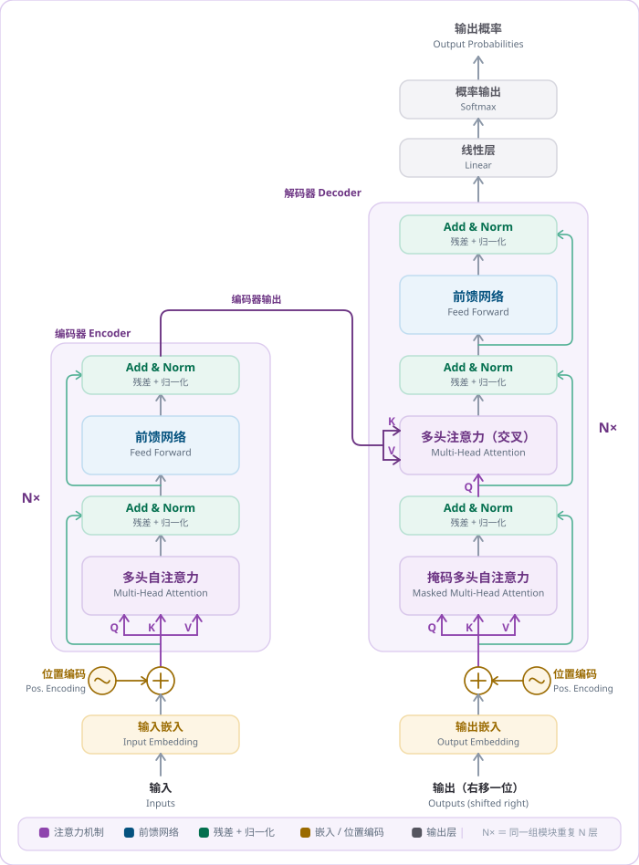

④大模型工作原理
🏗️ Transformer 经典架构图（2017 年《Attention is All You Need》）
这就是所有大模型（GPT、豆包、DeepSeek）的基础架构！下图可切换中文重绘版与论文英文原图，右边按中文版逐部分解读。

📐 本教学系统重绘 · 结构依据 Vaswani et al., "Attention Is All You Need", NeurIPS 2017
📖 逐部分解读这张架构图（点一条，展开详细解释）
（折叠时隐藏）
（折叠时隐藏）
（折叠时隐藏）
（折叠时隐藏）
（折叠时隐藏）
（折叠时隐藏）
（折叠时隐藏）
（折叠时隐藏）
核心：自注意力让 AI 同时看到整句，而不是逐词记忆。
规模：GPT-3 —— 96 层、1750 亿参数。
注意：GPT 系列只用解码器（Decoder-only）。